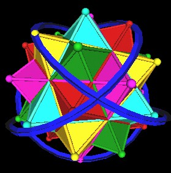
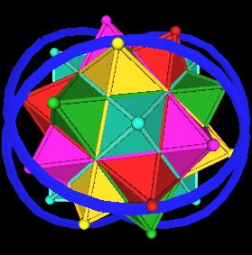

Some of the images I created while I was exploring the scaling of the Icosahedron and the Dodecahedron reminded me of some of the darwings Lynnclaire had drawn of the Pattern knot having straight edges rather than curved edges.
Here are some suggestive images.
First recall that the 120 Polyhedron contains 5 Octahedra.
| 5 Octahedra in the 120 Polyhedron. | |
| 5 Octahedra in the 120 Polyhedron. | |
Remember that in the rotating cube constructionof the 120 Polyhedron, the Octahedra rotate on 4 different axes (with the 4 cubes). Or, in the Jitterbug construction, that the Octahedra is just one position of the Jitterbugs. The 8 triangles of each of the Octahedra rotate and expand outward.
So there is a lot of dynamics going on....
Here are some images of the Pattern Knot in relation to the 5 Octahedra. (The "open angle" used for the knot is 30 degrees in these images.)
| Pattern Knot (blue) and 5 Octahedra of the 120 Polyhedron. |
Although it looks like the Pattern Knot changes direction exactly at the Octahedra vertices (and it does), there are some places where the Pattern Knot does not match the Octahedra vertices, as can be seen in the next picture.
| Pattern Knot and 5 Octahedra of the 120 Polyhedron. |
Maybe if this straight-edged Pattern knot was changed to match up with the Octahedra vertices exactly then it would be a true knot, without the knot edges intersecting each other but rather weaving by each other as a real knot would. (Oct. 28, 2001 @ 12:10pm)
(After writing the above, and posting this page to the web, I investigated further and found that by making the suggested changes to 4 (out of 8) of the straight-edge knot vertices so they match exactly with the Octahedra vertices (as do 4 with no modifications) that a knot is indeed formed. But is it the Pattern Knot? You can see the results here.)(Oct. 28, 2001 @ 1:20pm)
Another orientation....
| Pattern Knot and 5 Octahedra of the 120 Polyhedron. |
Instead of using straight edges for the Pattern Knot, we can use curved edges. We find that there are several Octahedra vertices aligned with the Knot's path.
|  |
| Pattern Knot around 5 Octahedra of the 120 Polyhedron. |
But the vertices do not all fall exactly on the path of the Knot. Some are not radially far enough out from the center of volume to fall on the knot path. Here I have changed the radius of the Pattern Knot.
| Pattern Knot around 5 Octahedra of the 120 Polyhedron. |
Another orientations and scales.....
| Pattern Knot around 5 Octahedra of the 120 Polyhedron. |
|  |
| Pattern Knot around 5 Octahedra of the 120 Polyhedron. |
| Pattern Knot around 5 Octahedra of the 120 Polyhedron. |
In the following pictures, I have changed the Knot's "open angle" to be 19.5 degrees and I have gone back to using straight edges.
4 of the Knot's vetices (dark blue) are at Octahedra vertices, and 4 Knot vertices are above points radially corresponding to the Icosahedron face centers. (Not all Knot vertices are seen.)
| Pattern Knot vertex (blue) aligned with Icosahedron face center. |
| Pattern Knot at 19.5 degrees. |
It may be the case that further exploration of these ideas will reveal some connection to the scaling by extending polyhedra edges and the Pattern Knot construction....
Usage Note: My work is copyrighted. You may use my work but you may not include my work, or parts of it, in any for-profit project without my consent.